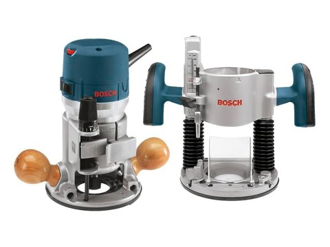

Bosch 1617EVSPK 2.25 HP Combination Plunge- and Fixed-Base Router Kit
This is the lowest price in our log for Bosch’s two-base router kit. It’s $212.42 this morning, shipped and sold by Amazon, against a $289 list price. Our earlier listings were $230 (Nov 5, 9 and 12), and it was $239 last week. The 12 A, 2.25 HP motor has a speed dial from 8,000 to 25,000 rpm, and constant-response circuitry holds speed under load. It drops into a fixed base with microfine depth adjustment for edge profiles, or into a plunge base for mortises, dadoes and template work. The bases have hardwood handles, a threaded three-hole pattern for mounting in a router table, and a 2″ sub-base opening that makes template guides easier to load. For a small shop, it’s the one router that handles both hand-held and table work. Bosch’s RA1054 edge guide from Friday’s issue fits it, and it was still $28.87 this morning.
SHOP PRICE: $212.42
LIST: $289